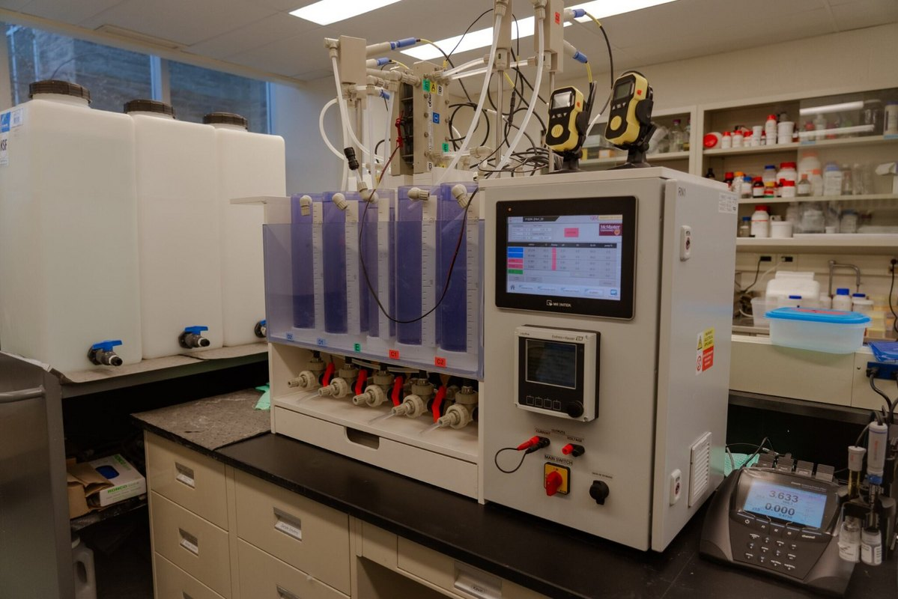
Electrochemical Aquaculture Systems — Zero Discharge
Electrochemical RAS that remove ammonia and recover nutrients for zero-discharge operation — piloting a saline system coupled to freshwater algae, harvested by electrocoagulation.
Funded projects and international collaborations, 2016–present.

Electrochemical RAS that remove ammonia and recover nutrients for zero-discharge operation — piloting a saline system coupled to freshwater algae, harvested by electrocoagulation.
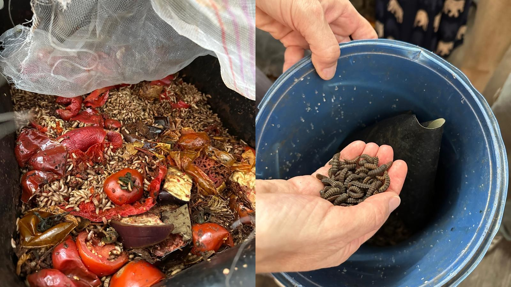
Plant waste becomes black soldier fly larvae for fish feed, and frass for crops — optimising the production protocol, product nutrition and applications, with Israeli partners.
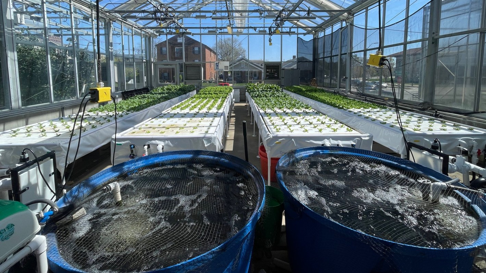
Research leader on Purdue’s $10M aquaponics programme: system design, environmental and economic assessment, stakeholder engagement and education.
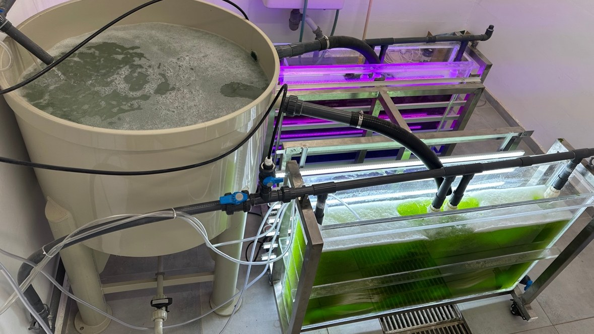
Microalgae scrub dissolved nutrients from RAS wastewater, coupled with anaerobic co-digestion and emission mitigation — screened, kinetically modelled and LCA-assessed.
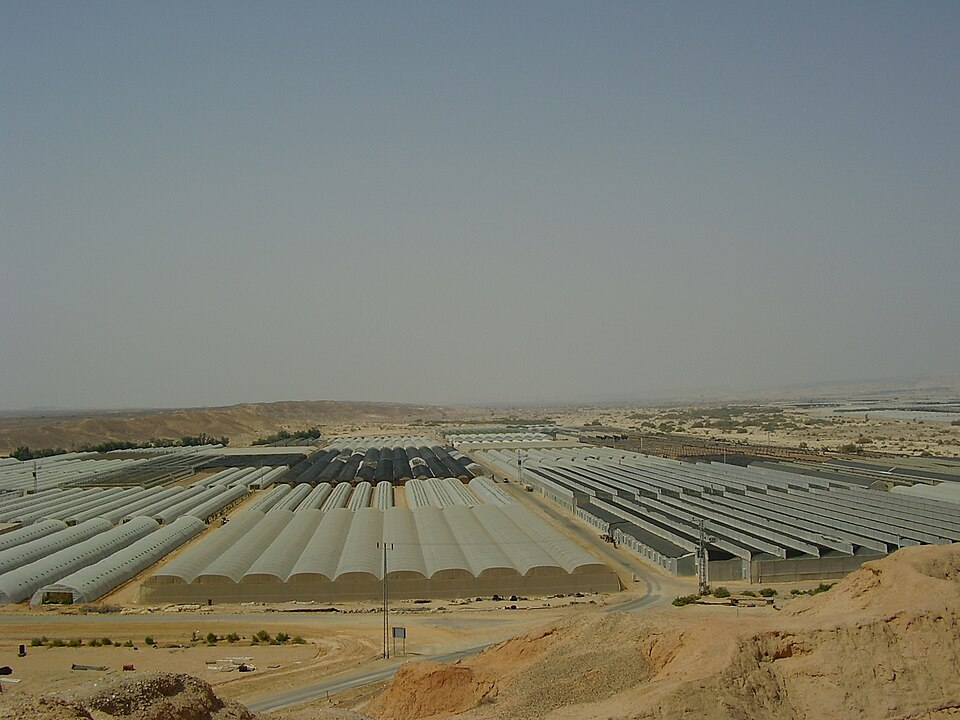
Leading the climate-smart aquaculture work — aquaponics and biofloc that save water in arid Mediterranean regions, within the water–energy–food–ecosystems nexus.
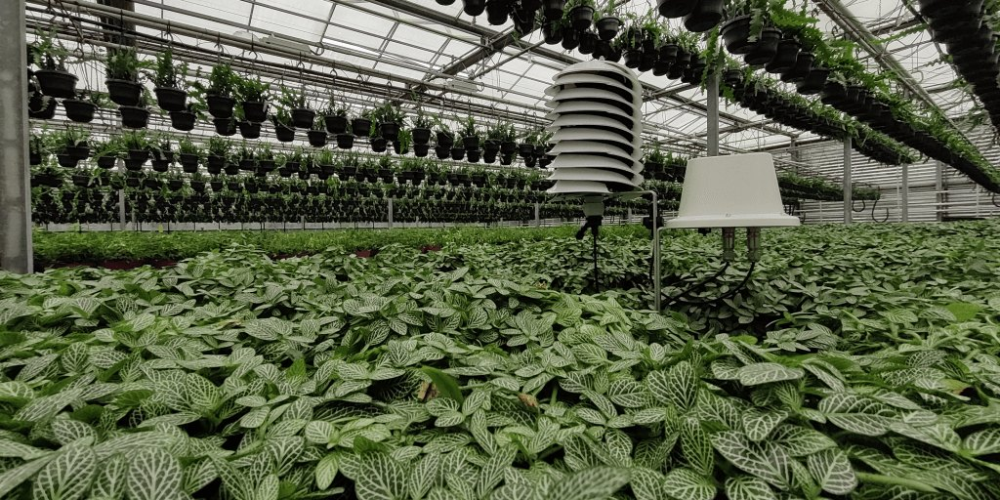
With the Shamir Research Institute (Israel): multimodal sensing that catches nitrogen and iron stress early. Purdue leads independent validation (WP6).
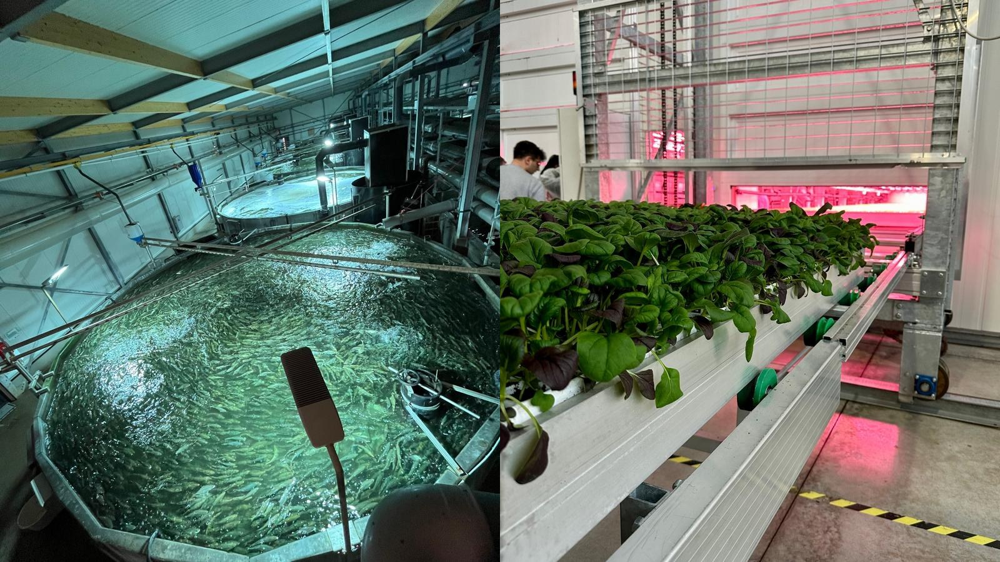
A European action making farm AI transferable between sites and independently verifiable (main proposer: Prof. Tomas Norton, KU Leuven).
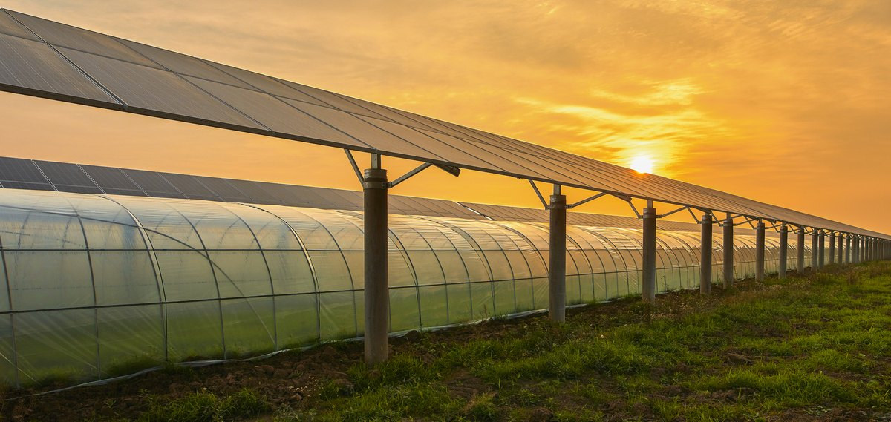
Energy-model scenarios and validation experiments in Israel and Germany for aquaponics that run off-grid.
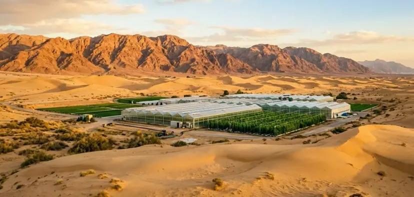
High-tech, climate-smart desert aquaponics and their numerical simulators, toward multi-trophic city food production systems.
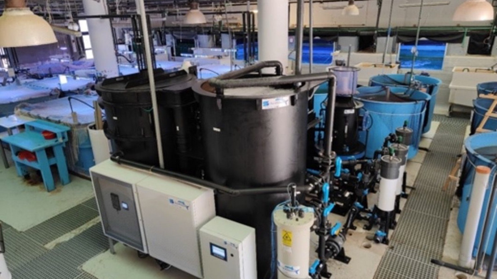
Designing ecologically recycling, high-density systems tailored to Hainan Province, with full sustainability and environmental impact assessment.
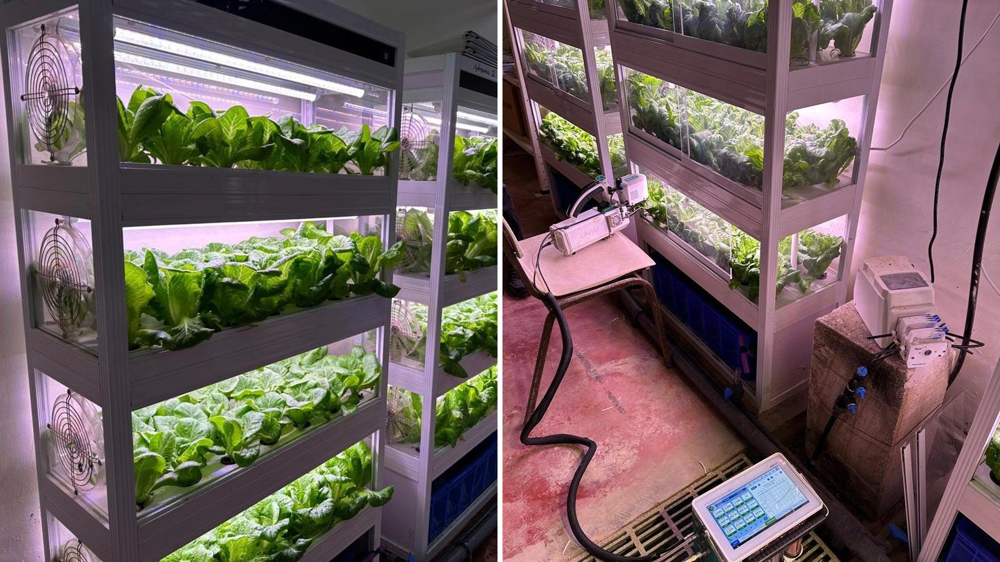
Integrated multitrophic city food systems that recycle water, nutrients and energy in urban production.
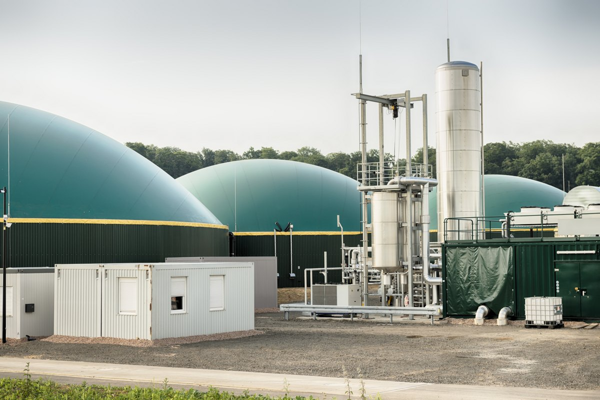
Running a three-loop off-grid aquaponics system — nutrient and carbon dynamics, with fish sludge digested onsite to biogas.
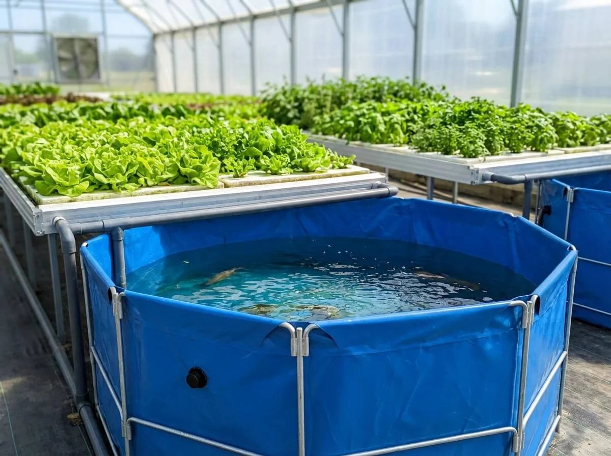
Tracing nutrient transformations and energy balance across recycling levels to optimise resource efficiency.